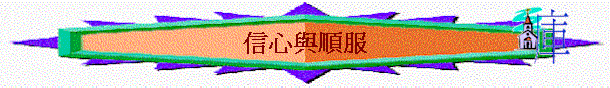

引言：
 ～今日我們會從以色列人出埃及入迦南其中所發生的一件事情，看我們對神的信心與順服。
～今日我們會從以色列人出埃及入迦南其中所發生的一件事情，看我們對神的信心與順服。
～何謂「信心」，一個人若沒信心，他會有甚麼表現？
～何謂「順服」，順服的相反字是甚麼？
～昔日的以色列人又有沒有信心與順服呢？我們嘗試看一看
一.窺地報信(沒信心的鑑戒)(申1:6-8,19-40)
1.
在申1:6-8,19-21，神對出了埃及後的以色列民有甚麼吩咐及提醒？
(註：亞摩利人之山地即迦南地，也是今日以色列人住的地方，又稱為應許之地，之前以色列人在埃及為奴，沒有自己的地土，沒有自己的國家，及基本的自由，但神憐憫他們，拯救他們出埃及，要入應許之地，重新建造一個新的國家，有自己的地土。)
2.
神的命令清不清楚？有甚麼保證？正常來說，你若是神的子民，你聽完命令後，你會怎做？
3.
在v.22-23中，他們有甚麼回應？探路的行動是否意味可以探完後覺得很難去而不去呢？
4.
何以見得？
答：不是，因為探路的原意是為了「該走何道，必進何城」,是研究怎樣去，不是探求去不
去。
5.
甚麼人去探路？在v.24-25中，探路的結果如何？值不值得去應許之地？為甚麼？
6.
在v.26-33中，他們的回應是甚麼？試找出他們不肯去的原因。
7.
你認為他們有否誇大難處？何以見得？另外他們的懼怕反影對神怎樣？這種沒信心合理嗎?(申1:30-33)
8.
你在行天路過程中，有否試過對神沒信心？為甚麼？
9.
你有否經歷過「神帶領你經過難處」「加力給你行上大而可怕的道路」的成功深刻經歷，試分享。
10.
摩西、迦勒、約書亞三個首領對神有信心嗎？他們信甚麼？信心影響他們有甚麼表現？(可參考民14:5-9及申1:29-30,36)
11.
百姓卻沒有信心，違背神的命令，最終結局怎樣？(1:34-35,39-40)，得此教訓後，你若是百姓，你會學到甚麼功課？
二.擅自爭戰(不順服的表現)(申1:41-46)
1.
百姓知道神管教後，他們有甚麼行動？你認為他們的做法對嗎？
2.
神的回應是怎樣？為甚麼不要他們上去？他們知道後又有甚麼回應？
3.
至終結局是怎樣？有甚麼地方可成為我們的鑑戒！
4.
「你聽不聽神的話？」若給你評分(0-10分，0是絕對不順服神，10是絕對順服神)，你給自己幾多分，為甚麼？
總結：你最想學「信心」，還是「順服」的功課，為甚麼？如何實踐你想學的真理？
附加資料
A.悖逆的鑑戒(申1:6-46)
「你們卻不肯上去，竟違背了耶和華你們神的命令。」1:26
〜重提38年前入迦南遭神管教的片段，為何他們不肯入呢？
a.
不是沒有吩咐
「耶和華我們的神在何烈山曉諭我們說：你們在這山上住的日子夠了；要起行轉到亞摩利人的山地和靠近這山地的各處，就是亞拉巴、山地、高原、南地，沿海一帶迦南人的地，並利巴嫩山又到伯拉大河。」1:6-7
〜神很清楚在何烈山(即西乃山)講明他們要起行，入迦南地，他們不是聽不清楚，不是沒有吩咐而不入迦南地！
b.
不是沒有應許
「如今我將這地擺在你們面前；你們要進去得這地，就是耶和華向你們列祖亞伯拉罕、以撒、雅各起誓應許賜給他們和他們後裔為業之地。」」1:8
〜神應許(promise)將這地賜給他們---神的說話就是最大的保証
c.不是沒有領袖
「那時，我對你們說：「管理你們的重任，我獨自擔當不起。」」1:9
「但你們的麻煩，和管理你們的重任，並你們的爭訟，我獨自一人怎能擔當得起呢？你們要按著各支派選舉有智慧、有見識、為眾人所認識的，我立他們為你們的首領。」1:12-13
「我便將你們各支派的首領，有智慧、為眾人所認識的，照你們的支派，立他們為官長、千夫長、百夫長、五十夫長、十夫長，管理你們。」1:15
〜他們有摩西成為領袖帶他們入迦南，更有千夫長，五十夫長、十夫長，有智慧有見識的人為首領，他們應有信心入的，結果大部份領袖也失敗。
d.
不是沒有體諒
「我們照著耶和華我們神所吩咐的從何烈山起行，經過你們所看見那大而可怕的曠野，往亞摩利人的山地去，到了加低斯巴尼亞。」1:19
「看哪，耶和華你的神已將那地擺在你面前，你要照耶和華你列祖的神所說的上去得那地為業；不要懼怕，也不要驚惶。你們都就近我來說：『我們要先打發人去，為我們窺探那地，將我們上去該走何道，必進何城，都回報我們。』這話我以為美，就從你們中間選了十二個人，每支派一人。」1:21-23
〜摩西體諒他們，容許他們先派探子打探，該走那條道路，讓他們更放心，及有計劃踏上。
e.
不是沒有美地
「他們手裡拿著那地的果子下來，到我們那裡，回報說：『耶和華我們的神所賜給我們的是美地。』」1:25
〜他們親眼看見這地是神賜的，是美地，沒理由不去的。
f.
不是沒有鼓勵
「在帳棚內發怨言說：『耶和華因為恨我們，所以將我們從埃及地領出來，要交在亞摩利人手中，除滅我們。我們上那裡去呢？我們的弟兄使我們的心消化，說那地的民比我們又大又高，城邑又廣大又堅固，高得頂天，並且我們在那裡看見亞衲族的人。』」1:27-28
「我就對你們說：『不要驚恐，也不要怕他們。在你們前面行的耶和華你們的神必為你們爭戰，正如他在埃及和曠野，在你們眼前所行的一樣。』」1:29-30
g.不是沒有管教
「「耶和華聽見你們這話，就發怒，起誓說：『這惡世代的人，連一個也不得見我起誓應許賜給你們列祖的美地；惟有耶孚尼的兒子迦勒必得看見，並且我要將他所踏過的地賜給他和他的子孫，因為他專心跟從我。』」1:34-36
「那時，你們回答我說：『我們得罪了耶和華，情願照耶和華我們神一切所吩咐的上去爭戰。』於是你們各人帶著兵器，爭先上山地去了。耶和華吩咐我說：『你對他們說：不要上去，也不要爭戰；因我不在你們中間，恐怕你們被仇敵殺敗了。』
我就告訴了你們，你們卻不聽從，竟違背耶和華的命令，擅自上山地去了。住那山地的亞摩利人就出來攻擊你們，追趕你們，如蜂擁一般，在西珥殺退你們，直到何珥瑪。」1:41-44
〜他們不肯上去，結果神管教他們，二十歲以外男丁，不許入應許地，但他們知道後，則爭先上去爭戰，但神吩咐他們不要上去，因為神不在中間，可惜，他們有管教後，仍不肯順服神，結果大敗。
h.真正失敗因由
(1)探子的失敗
(A)誇大難處
「我們上那裡去呢？我們的弟兄使我們的心消化，說那地的民比我們又大又高，城邑又廣大又堅固，高得頂天，並且我們在那裡看見亞衲族的人。」1:28
(B)越過職權
「你們都就近我來說：『我們要先打發人去，為我們窺探那地，將我們上去該走何道，必進何城，都回報我們。』」1:22
〜探子的職責不是決定去不去，而是決定怎樣去的！
(C)令羊退後
(2)會眾的失敗
(A)
不信
「在你們前面行的耶和華你們的神必為你們爭戰，正如他在埃及和曠野，在你們眼前所行的一樣。你們在曠野所行的路上，也曾見耶和華你們的神撫養你們，如同人撫養兒子一般，直等你們來到這地方。你們在這事上卻不信耶和華你們的神。他在路上，在你們前面行，為你們找安營的地方；夜間在火柱裡，日間在雲柱」1:30-33
〜每日經歷神恩典仍不信
〜曾經看見神大能仍懼怕
(B)悖逆
「你們卻不肯上去，竟違背了耶和華你們神的命令。」1:26
「我就告訴了你們，你們卻不聽從，竟違背耶和華的命令，擅自上山地去了。」1:43
(C)自我
他們對神命令的重點是自己，但凡對自己無益，有困難的事，就不行，但對自己有利的事情，神叫不做，他們也去做。